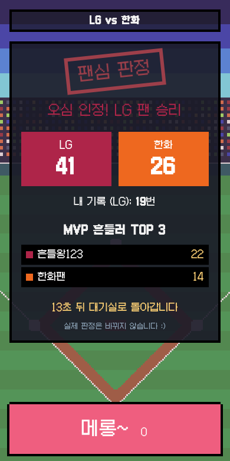
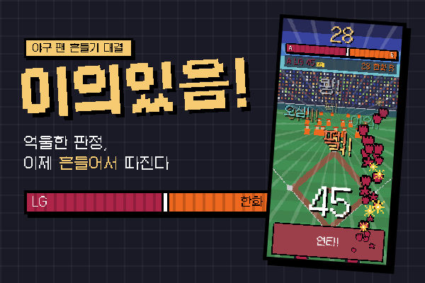
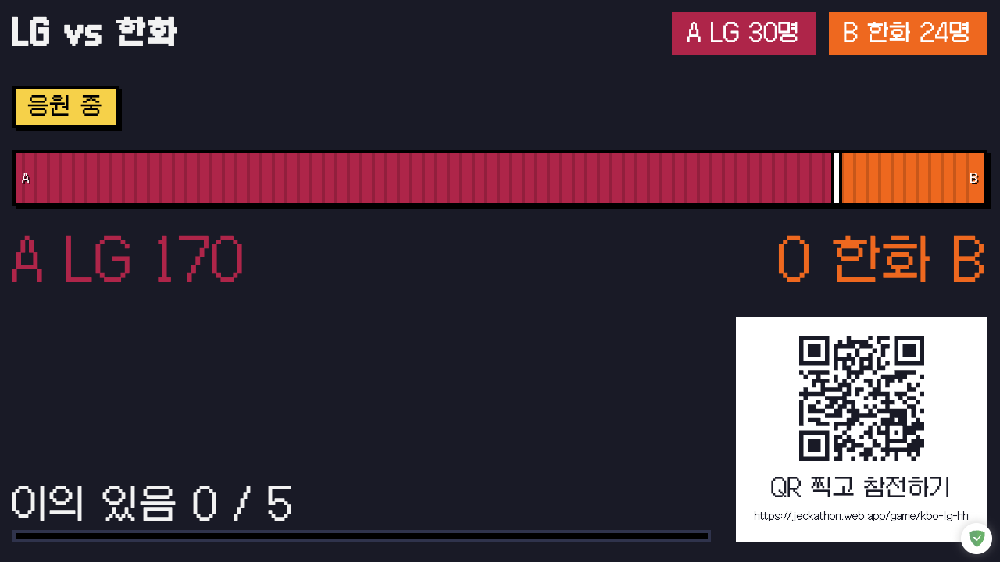

전광판의 QR을 찍고 응원할 팀을 고릅니다.

폰을 흔들면 응원 점수가 쌓이고, 우세한 팀이 바에서 상대를 밀어냅니다.

버튼을 누른 팬이 기준 인원을 넘으면 모든 폰에서 벤치클리어링 컷신이 동시에 나옵니다.

10초 동안 양 팀 팬이 폰을 흔들어 승부합니다.

가짜 판정문과 MVP가 발표되고, 이긴 팀은 [메롱~]으로 놀립니다.
야구 팬이 억울한 판정이 나온 순간, 휴대폰을 흔들어 상대 팀 팬과 승부를 내는 모바일 웹 서비스입니다.

설치와 로그인이 없습니다. 음악이 나오므로 화면 오른쪽 위의 소리 버튼을 확인해 주세요.
경기장이나 단체 관람 자리에서 같은 경기를 함께 보는 야구 팬입니다. 특히 응원하는 팀이 서로 갈리는 친구, 동료 모임을 생각했습니다.
경기를 보다 보면 "저건 오심이다!" 싶은 순간이 옵니다. 그런데 팬이 할 수 있는 건 소리를 지르거나 커뮤니티에 글을 쓰는 것뿐입니다. 화는 났는데 풀 곳이 없고, 옆자리 상대 팀 팬과 누가 맞는지 가릴 방법도 없습니다.
그래서 판정은 못 바꿔도, 팬끼리는 그 자리에서 승부를 내게 했습니다.
전광판의 QR을 찍고 응원할 팀을 고릅니다.
폰을 흔들면 응원 점수가 쌓이고, 우세한 팀이 바에서 상대를 밀어냅니다.
버튼을 누른 팬이 기준 인원을 넘으면 모든 폰에서 벤치클리어링 컷신이 동시에 나옵니다.
10초 동안 양 팀 팬이 폰을 흔들어 승부합니다.

가짜 판정문과 MVP가 발표되고, 이긴 팀은 [메롱~]으로 놀립니다.
결과 화면 맨 아래에는 "실제 판정은 바뀌지 않습니다 :)"라고 적혀 있습니다. 쓸데없지만, 억울함은 풀립니다.

전광판 화면입니다. 큰 화면에 띄워 두면 관중이 QR로 들어오고, 응원 점수와 벤치클리어링이 그대로 중계됩니다.
| 기술 스택 | React + Vite로 만든 모바일 웹입니다. 흔들기는 DeviceMotion API, 픽셀 그림은 Canvas 2D, 진동은 Vibration API(안드로이드)를 씁니다. |
| 인프라 구성 | Firebase Hosting(HTTPS 정적 배포)과 Firebase Realtime Database만 씁니다. 별도 서버 없이 참여 인원, 점수, 경기 상태를 DB 구독으로 동기화하고, 서버 시각 보정으로 모든 기기의 장면 전환을 맞춥니다. |
| 서비스 (팬 화면) | https://jeckathon.web.app |
| 전광판 화면 | https://jeckathon.web.app/host/kbo-lg-hh |
| 소스 코드 | https://github.com/FanchClearing/fanch-clearing |